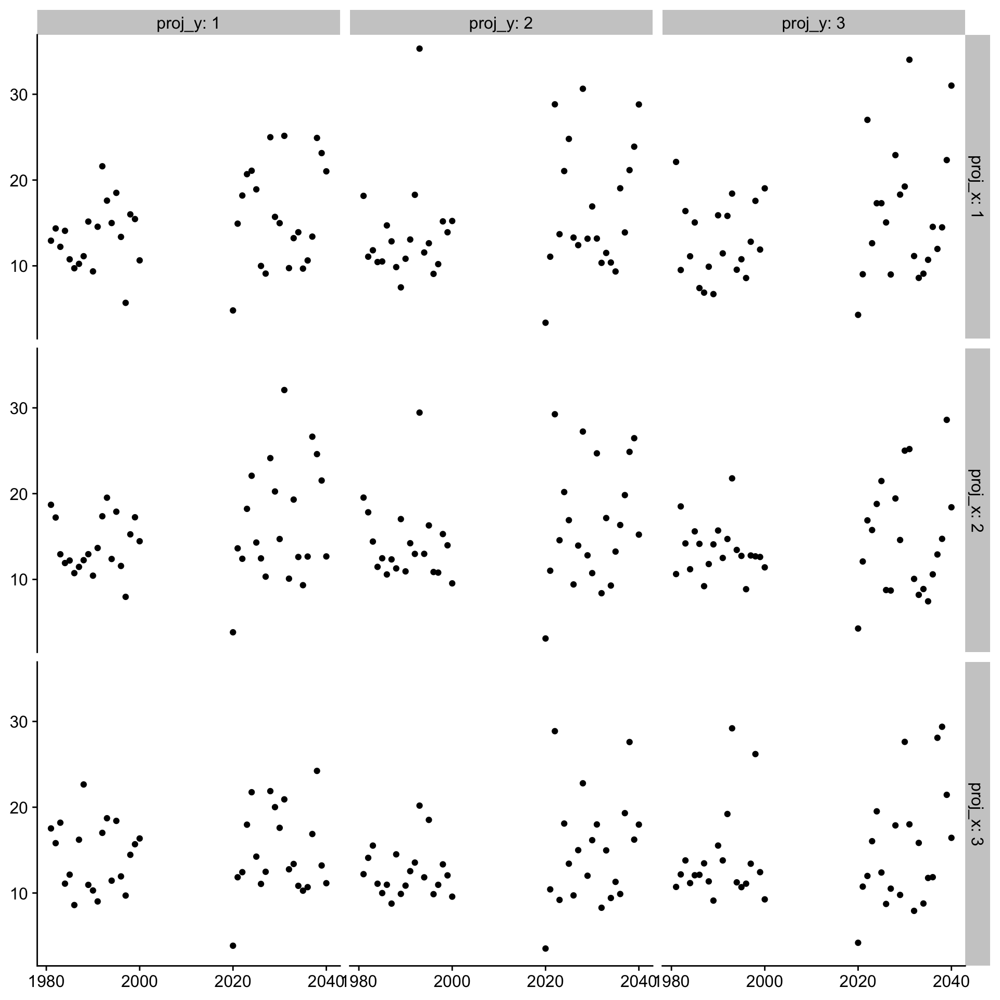
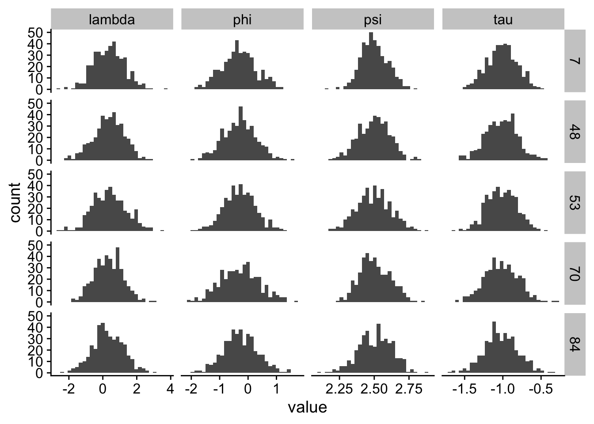

Code
d <- here("Data", "yearly_maximum_per_hour.csv") |>
read_csv() |>
filter(year <= 2040, proj_x <= 10, proj_y <= 10) |>
arrange(station, year)We read in data from 100 of the geographical locations from 1980 to 2014
d <- here("Data", "yearly_maximum_per_hour.csv") |>
read_csv() |>
filter(year <= 2040, proj_x <= 10, proj_y <= 10) |>
arrange(station, year)d |>
filter(proj_x <= 3, proj_y <= 3) |>
ggplot(aes(year, precip)) +
geom_point() +
facet_grid(proj_x ~ proj_y, labeller = labeller(.rows = label_both, .cols = label_both)) +
labs(x = NULL,
y = NULL) +
theme_half_open()
Define the Generalized Extreme Value distribution as
\[ \mathrm{GEV}(y \vert \mu, \sigma, \xi) = \begin{cases} e^{-\left(1 + \xi\frac{y - \mu}{\sigma}\right)^{-1/\xi}_+}, \xi \neq 0; \\ e^{-e^{-\frac{y - \mu}{\sigma}}}, \xi = 0 \end{cases} \]
log_lik_trend <- function(dat, par) {
y <- dat$y
t <- dat$year
t <- t - 1981
mu0 <- exp(par[1])
sigma <- exp(par[2]) * mu0
xi <- 1 / (1 + exp(-par[3])) - 0.5
delta <- 0.016 * 1 / (1 + exp(-par[4])) - 0.008
mu <- mu0 * (1 + delta * t)
m <- length(y)
z <- (y - mu) / sigma
if (any(1 + xi * z <= 0)) return(NA)
out <- - m * log(sigma)
out <- out - (1 + 1/xi) * sum(log(1 + xi * z))
out <- out - sum((1 + xi * z)^{-1/xi})
priors <- dnorm(par[1], mean = 2.4, sd = 1, log = T) +
dnorm(par[2], mean = -0.5, sd = 1, log = T) +
dnorm(par[3], mean = 0, sd = 1, log = T) +
dnorm(par[4], mean = 0, sd = 1, log = T)
out <- out + priors
-out
}f_trend <- function(x, t, mu0, sigma, xi, delta) {
t <- t - 1981
mu <- mu0 * (1 + delta * t)
exp(-(1 + xi * (x - mu) / sigma)^{-1/xi})
}
fit_gev_trend <- function(data, ...) {
y <- data$y
opt <- optim(log_lik_trend,
par = c(0, 0, 0.1, 0),
dat = data,
hessian = T)
par <- opt$par
mu <- exp(par[1])
sigma <- exp(par[2]) * mu
xi <- 1 / (1 + exp(-par[3])) - 0.5
delta <- 0.016 * 1 / (1 + exp(-par[4])) - 0.008
hess <- opt$hessian
tibble(hess = list(hess),
par = list(par))
}d_fit <- d |>
filter(proj_x <= 10, proj_y <= 10) |>
select(year, y = precip, station, proj_x, proj_y) |>
group_by(station, proj_x, proj_y) |>
group_modify(fit_gev_trend) |>
ungroup()eta_hat <- Matrix(unlist(d_fit$par), ncol = 1)
Q_etay <- bdiag(d_fit$hess)
chol_Q_etay <- bdiag(d_fit$hess |> map(chol))
dim(eta_hat)[1] 400 1dim(Q_etay)[1] 400 400dim(chol_Q_etay)[1] 400 400eta <- Matrix(0,
nrow = nrow(eta_hat),
ncol = 1)
Z <- Matrix(data = 0,
nrow = nrow(eta_hat),
ncol = 4)
for (i in 1:4) Z[i + 0:99 * 4, i] <- 1
nu <- Matrix(data = 0,
nrow = 4,
ncol = 1)priors <- d_fit |>
unnest(par) |>
group_by(station) |>
mutate(term = row_number()) |>
ungroup() |>
group_by(term) |>
summarise(mean = mean(par),
sd = sd(par),
.groups = "drop")y <- eta_hat
x <- nu
Q_e <- Q_etay
Z <- Matrix(data = 0,
nrow = nrow(eta_hat),
ncol = 4)
for (i in 1:4) Z[i + 0:99 * 4, i] <- 1
mu_x <- Matrix(priors$mean)
Q_x <- .sparseDiagonal(n = nrow(mu_x), x = 1 / priors$sd^2)
chol_Q_x <- Cholesky(Q_x)
yx <- rbind(y, x)
Q_yx_cond_theta <- Matrix(data = 0,
nrow = nrow(y) + nrow(x),
ncol = nrow(y) + nrow(x))
# Upper left of matrix
Q_yx_cond_theta[1:nrow(y), 1:nrow(y)] <- Q_e
# Upper right of matrix
Q_yx_cond_theta[1:nrow(y), (nrow(y) + 1):(nrow(y) + nrow(x))] <- -Q_e %*% Z
# Lower left of matrix
Q_yx_cond_theta[(nrow(y) + 1):(nrow(y) + nrow(x)), 1:nrow(y)] <- - t(Z) %*% Q_e
# Lower right of matrix
Q_yx_cond_theta[(nrow(y) + 1):(nrow(y) + nrow(x)), (nrow(y) + 1):(nrow(y) + nrow(x))] <- Q_x + t(Z) %*% Q_e %*% Z
chol_Q_yx_cond_theta <- Cholesky(Q_yx_cond_theta)
Q_x_cond_y <- Q_x + t(Z) %*% Q_e %*% Z
mu_x_cond_y <- solve(Q_x_cond_y, Q_x %*% mu_x + t(Z) %*% Q_e %*% y)\[ \begin{aligned} y_i &\sim \mathrm{GEV_{trend}}(\mu_i, \sigma_i, \xi_i, \Delta_i) \\ (\psi_i, \tau_i, \phi_i, \gamma_i) &= (\log(\mu_i), \log(\sigma_i/\mu_i), h(\xi_i), d(\Delta_i)) \\ \begin{bmatrix} \psi_i \\ \tau_i \\ \phi_i \\ \gamma_i \end{bmatrix} &= N\left( \begin{bmatrix} \mu_\psi \\ \mu_\tau \\ \mu_\phi \\ \mu_\gamma \end{bmatrix}, \mathrm{diag}(\sigma_\psi^2, \sigma_\tau^2, \sigma_\phi^2, \sigma_\gamma^2) \right) \end{aligned} \]
Our \(\theta\) now contains eight parameters: \(\psi_i\), \(\tau_i\), \(\phi_i\), \(\gamma_i\), \(\sigma_\psi\), \(\sigma_\tau\), \(\sigma_\phi\) and \(\sigma_\gamma\).
Let’s put \(N(0, 3)\) priors on the means and \(\mathrm{Exp}(1)\) priors on the standard deviations.
theta <- c(priors$mean, 1/priors$sd)
pi_theta <- function(theta) {
mus <- theta[1:4]
sigmas <- theta[5:8]
out <- 0
for (i in 1:4) {
out <- out + dnorm(mus[i], mean = 0, sd = 3, log = T)
out <- out + dexp(sigmas[i], rate = 1, log = T)
}
out
}
pi_theta(theta)[1] -33.4639\[ \pi(\theta \vert \hat\eta) \propto \pi(\theta) \frac{\pi(\hat\eta\vert x, \theta)\pi(x\vert\theta)}{\pi(x\vert\hat\eta, \theta)} \]
We need to know three conditional distributions:
\[ p(x | \theta, y) = N(x | \mu_{x|y}, Q_{x|y}) \]
\[ \mu_{x|y} = Q^{-1}_{x|y}(Q_x\mu_x + Z^TQ_\varepsilon y) \\ Q_{x|y} = Q_x + Z^TQ_\varepsilon Z \]
In code, we get:
Q_x_cond_y <- Q_x + t(Z) %*% Q_e %*% Z
mu_x_cond_y <- solve(Q_x_cond_y, Q_x %*% mu_x + t(Z) %*% Q_e %*% y)
chol_Q_x_cond_y <- Cholesky(Q_x_cond_y)
pi_x_cond_theta_y <- function(x, mu_x_cond_y, chol_Q_x_cond_y) {
dmvn.sparse(
x = t(x),
mu = as.vector(mu_x_cond_y),
CH = chol_Q_x_cond_y,
prec = TRUE,
log = TRUE
)
}
pi_x_cond_theta_y(x = x, mu_x_cond_y = mu_x_cond_y, chol_Q_x_cond_y = chol_Q_x_cond_y)[1] -106542.4\[ p(y | x, \theta) = N(y | Zx, Q_\varepsilon^{-1}) \]
In code, we get:
Q_e <- bdiag(d_fit$hess)
chol_Q_e <- Cholesky(Q_e)
pi_y_cond_x_theta <- function(y, Z, x, chol_Q_e) {
dmvn.sparse(
x = t(y),
mu = as.vector(Z %*% x),
CH = chol_Q_e,
prec = TRUE,
log = TRUE
)
}
pi_y_cond_x_theta(y = y, Z = Z, x = x, chol_Q_e = chol_Q_e)[1] -105787.3\[ p(x | \theta) = N(x | \mu_x, Q_x^{-1}) \]
pi_x_cond_theta <- function(x, mu_x, chol_Q_x) {
dmvn.sparse(x = t(x),
mu = as.vector(mu_x),
CH = chol_Q_x,
prec = TRUE,
log = TRUE)
}
pi_x_cond_theta(x = x, mu_x = mu_x, chol_Q_x = chol_Q_x)[1] -659.8415pi_theta <- function(theta) 1
pi_theta_cond_y <- function(theta, y, x, mu_x, chol_Q_x, Z, chol_Q_e,
mu_x_cond_y, chol_Q_x_cond_y) {
pi_theta(theta) *
pi_y_cond_x_theta(y = y, Z = Z, x = x, chol_Q_e = chol_Q_e) *
pi_x_cond_theta(x = x, mu_x = mu_x, chol_Q_x = chol_Q_x) /
pi_x_cond_theta_y(x = x, mu_x_cond_y = mu_x_cond_y, chol_Q_x_cond_y = chol_Q_x_cond_y)
}
pi_theta_cond_y(
theta = theta,
y = y,
x = x,
mu_x = mu_x,
chol_Q_x = chol_Q_x,
Z = Z,
chol_Q_e,
mu_x_cond_y,
chol_Q_x_cond_y = chol_Q_x_cond_y
)[1] -655.1651Q_x_cond_y <- Q_x + t(Z) %*% Q_e %*% Z
chol_Q_x_cond_y <- Cholesky(Q_x_cond_y)
mu_x_cond_y <- solve(Q_x_cond_y, Q_x %*% mu_x + t(Z) %*% Q_e %*% y)
rmvn.sparse(
n = 1,
mu = mu_x_cond_y,
CH = chol_Q_x_cond_y,
prec = TRUE
)1 x 4 Matrix of class "dgeMatrix"
[,1] [,2] [,3] [,4]
[1,] 2.499038 -1.036788 -0.2767325 0.3364385mu_yx_cond_theta <- rbind(Z %*% mu_x_cond_y, mu_x_cond_y)
Q_yx_cond_theta <- Matrix(data = 0,
nrow = nrow(mu_yx_cond_theta),
ncol = nrow(mu_yx_cond_theta))
# Upper left of matrix
Q_yx_cond_theta[1:nrow(y), 1:nrow(y)] <- Q_e
# Upper right of matrix
Q_yx_cond_theta[1:nrow(y), (nrow(y) + 1):(nrow(y) + nrow(x))] <- -Q_e %*% Z
# Lower left of matrix
Q_yx_cond_theta[(nrow(y) + 1):(nrow(y) + nrow(x)), 1:nrow(y)] <- - t(Z) %*% Q_e
# Lower right of matrix
Q_yx_cond_theta[(nrow(y) + 1):(nrow(y) + nrow(x)), (nrow(y) + 1):(nrow(y) + nrow(x))] <- Q_x + t(Z) %*% Q_e %*% Z
chol_Q_yx_cond_theta <- Cholesky(Q_yx_cond_theta)
samp <- rmvn.sparse(
n = 400,
mu = mu_yx_cond_theta,
CH = chol_Q_yx_cond_theta,
prec = TRUE
) |>
as.matrix() |>
as.data.frame() |>
set_names(
c(
str_c(
rep(c("psi", "tau", "phi", "lambda"), times = 100), rep(1:100, each = 4)
),
"mu_psi", "mu_tau", "mu_phi", "mu_lambda"
)
) |>
as_tibble() |>
mutate(iter = row_number()) |>
pivot_longer(c(-iter))
samp |>
filter(str_detect(name, "[0-9]")) |>
mutate(station = parse_number(name),
name = str_replace_all(name, "[0-9]", "")) |>
filter(station %in% sample(unique(station), size = 5)) |>
ggplot(aes(value)) +
geom_histogram() +
facet_grid(station ~ name, scales = "free_x")`stat_bin()` using `bins = 30`. Pick better value with `binwidth`.